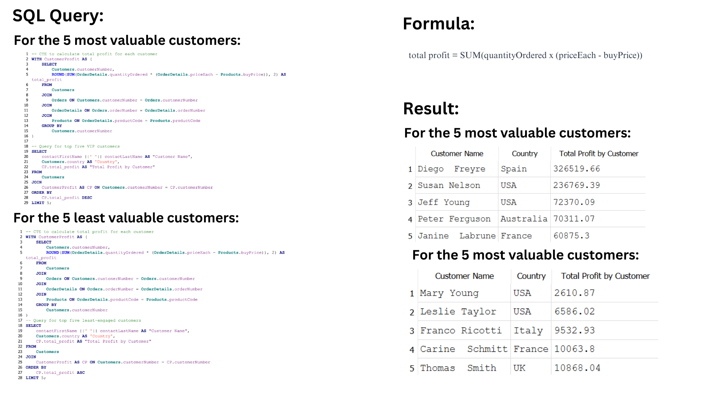
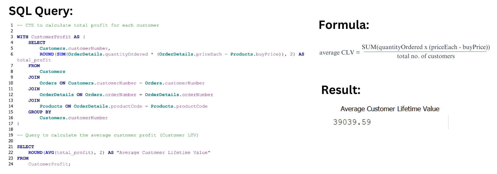

SQL Responses
Q1: Which products should we order more of or less of?
To answer this question using SQL, I:
- Calculated the products that were almost out of stock (Low Stock Ratio).
- Calculated the products that sold the most (Total Sales).
- Combined the two and listed the products that were the most profitable.

This analysis helps optimise inventory levels to prevent overstocking or running out of stock.
Q2: How should we match marketing and communication strategies to customer behaviour?
To answer this question using SQL, I:
- Calculated the total profits brought by each customer.
- Listed the top 5 most and least valuable customers.

This analysis gives us the most and the least valuable customers.
Q3: How much can we spend on acquiring new customers?
To answer this question using SQL, I:
- Calculated the number of new customers acquired per month and decided to spend money on acquisition.
- Calculated the average customer lifetime value.

This analysis returns the average customer lifetime value.
PBI Responses
Q1: Which products should we order more of or less of?
To answer this question using Power BI, I:
- Merged the 'orders' and the 'products' tables and kept all the relevant columns.
- Created measures for 'Low Stock Ratio' and 'Product Performance' using the previous formulae.
- Used two Stacked Bar Charts in the Report View and added the respective measure to generate the visual.
This visual shows the distribution of the products based on Low Stock Ratio and Highest Sales Performance.
Q2: How should we match marketing and communication strategies to customer behaviour?
To answer this question using Power BI, I:
- Created measures for 'Total Orders' and 'Total Profit' in the 'order details' table.
- Selected a Scatter Chart and added 'Total Orders' to X-axis and 'Total Profit' to Y-axis.
- Also added fields like 'country', 'customernumber' and 'no. of vehicles ordered' for a more detailed visual.
This visual shows the distribution of the profit generated through each customer.
Q3: How much can we spend on acquiring new customers?
To answer this question using Power BI, I:
- Merged the necessary tables and created measures for 'CLV' and 'Average CLV per Customer'.
- Created CLV bins to categorise customers based on their lifetime value:
CLV >= 20000 and < 50000 - Medium CLV
- Selected a Histogram (Clustered Column Chart) for the CLV bins.
- Selected a Treemap for CLV distribution by each customer and colour-coded them by 'country'.
- Selected three Cards for 'Total CLV', 'Total Customers' and 'Average CLV per Customer'.
The below visuals show how customers have been categorised based on their CLV and how they stack up against each other.
I have also created cards for the total CLV, total number of customers and the average CLV per customer.